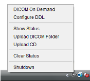

Getting Started
Thank you for registering!
This page contains some important instructions to help you after you have completed verification of your account.
| Verify Your Account | Before anything else, check your email for your Verification Email and click the link contained in it to verify your account. |
|---|---|
  |
Visit the settings page to invite members to your Group |
| Click the 'DICOM' icon to start the DDL service and upload a CD or Folder | |
|  | Once installed, the DDL Menu Configure can set up DICOM to a PACS or workstation |